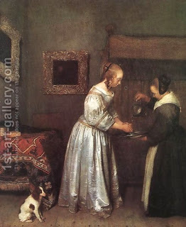

Menachot 61 - Waving but not Bringing Near
Some offerings, and not only flour offerings, require waving, for example, the oil (about half-liter) of a metzora (a spiritual leper), and his lamb brought as a guilt-offering. Before a metzora was purified, he had to bring these, and they were " waved as a wave service to God ." According to Rabbi Eliezer ban Yakov, the first fruit were also waved before they were given to a kohen to eat.
Also waved were the parts of an individual's peace offering that were offered on the Altar, and the breast and thigh portions of it - which were given to the priests.
How were the loaves and lambs of Shavuot waved ? Before the lambs were slaughtered, the kohen would put the two breads on top of the two lambs, place his hands beneath them, then extend them outward and bring them inward, raise them and lower them.
While bringing near was at the southwest corner of the Altar, waving had to be done to the east of the Altar, and if both were required, waving preceded bringing near.
Art: Gerard Terborch - Woman Washing Hands